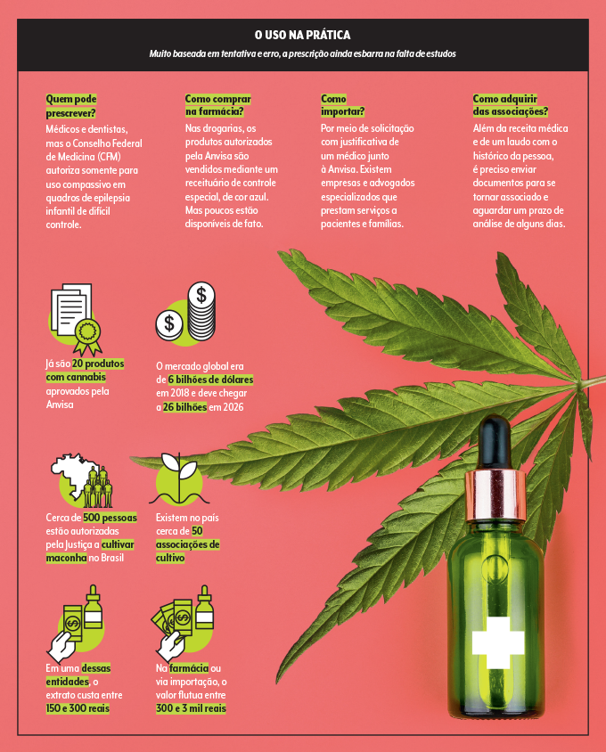

A cannabis tem sido utilizada ao longo da história em diversas culturas para fins terapêuticos, mas seu uso medicinal ganhou maior destaque nas últimas décadas, à medida que a ciência começou a investigar mais profundamente seus potenciais benefícios para a saúde. O uso medicinal da cannabis envolve principalmente os compostos conhecidos como canabinoides, como o tetraidrocanabinol (THC) e o canabidiol (CBD), que interagem com o sistema endocanabinoide do corpo humano.
Principais Benefícios Terapêuticos
Controle da dor: Um dos usos mais documentados da cannabis é no alívio da dor crônica. Estudos indicam que o THC pode ajudar a reduzir a dor em condições como artrite, esclerose múltipla, fibromialgia e dor neuropática.
Redução da ansiedade e depressão: O CBD tem sido associado a efeitos ansiolíticos e antidepressivos, ajudando a melhorar o estado emocional de pacientes com transtornos de ansiedade e depressão.
Tratamento de epilepsia: O CBD tem mostrado resultados promissores no tratamento de formas graves de epilepsia, como a síndrome de Dravet e a síndrome de Lennox-Gastaut, com destaque para o medicamento Epidiolex, aprovado pela FDA.
Melhora da qualidade do sono: Os canabinoides podem ajudar a regular os padrões de sono, sendo úteis para pessoas que sofrem de insônia e outras condições que afetam o sono.
Apoio ao tratamento de câncer: A cannabis pode ser utilizada para aliviar efeitos colaterais do tratamento de câncer, como náuseas e vômitos induzidos pela quimioterapia, além de ajudar no controle da dor.
Se quiser saber mais. Clique aqui!
